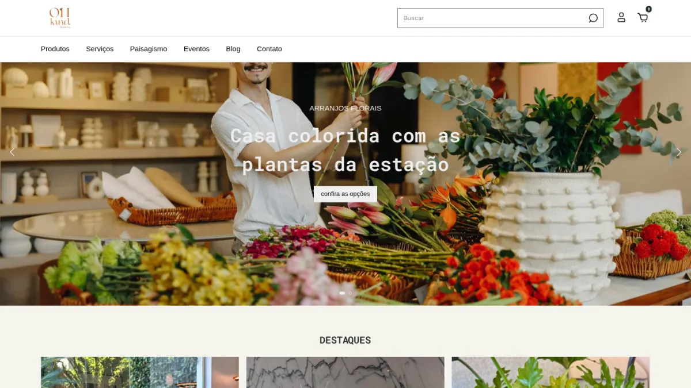
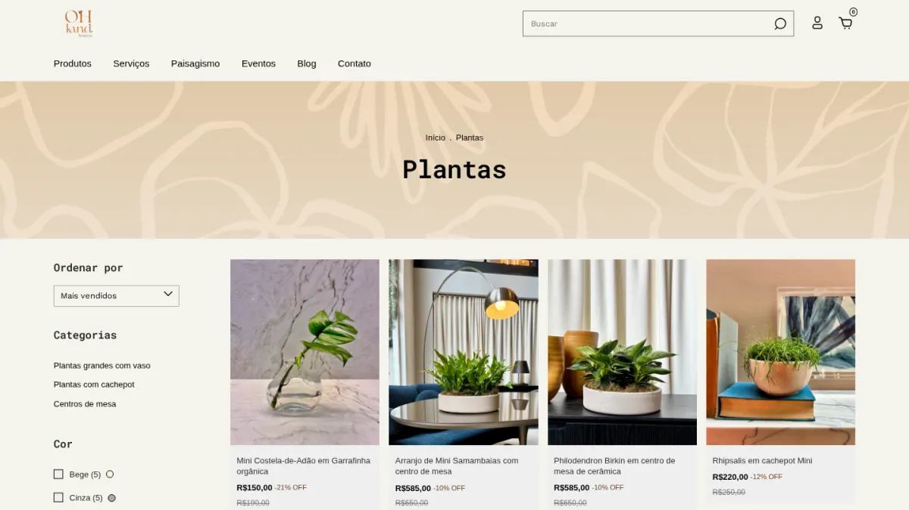
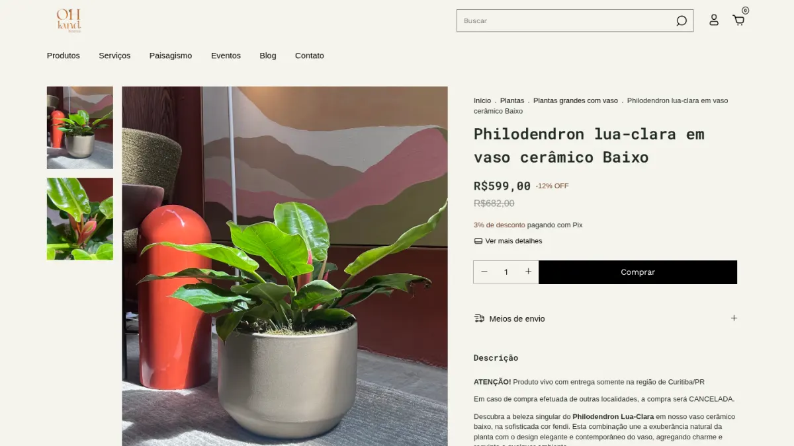
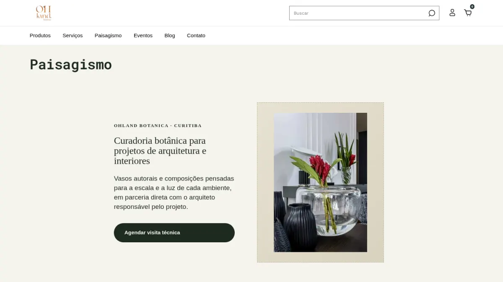

Ohland Botânica
Natural plants, floral arrangements and custom projects for interiors and landscaping.
Visit website ↗Selected projects from companies we have worked with.




Natural plants, floral arrangements and custom projects for interiors and landscaping.
Visit website ↗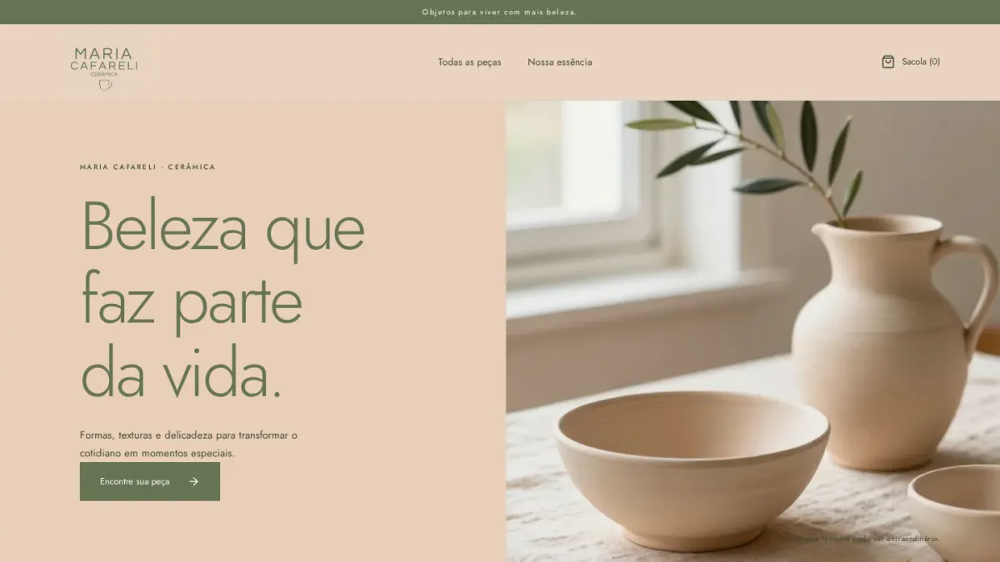
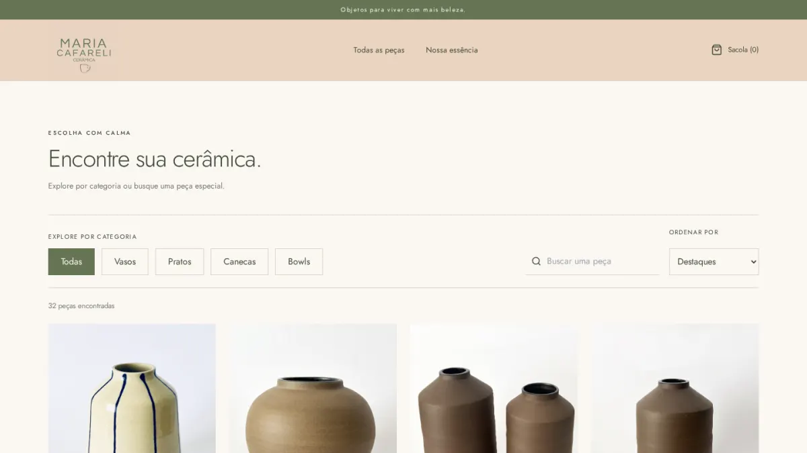
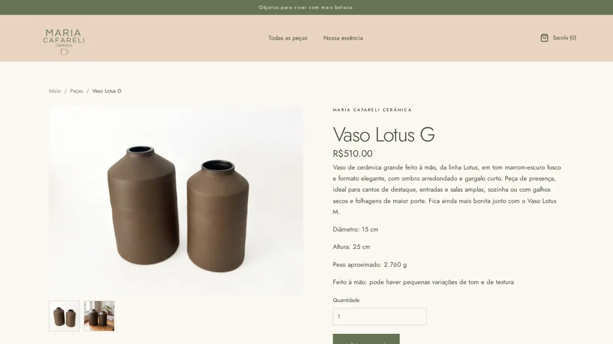
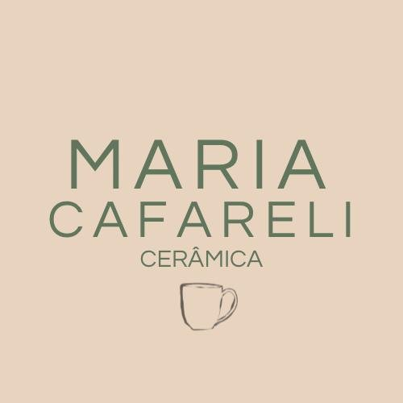
Ceramic vases, plates, bowls and mugs for the small rituals of everyday life.
Visit website ↗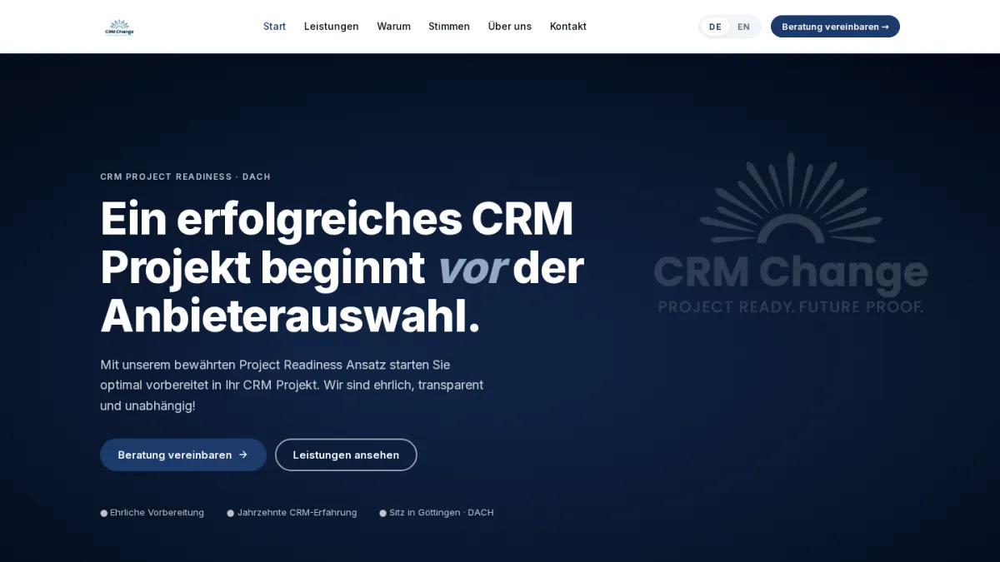
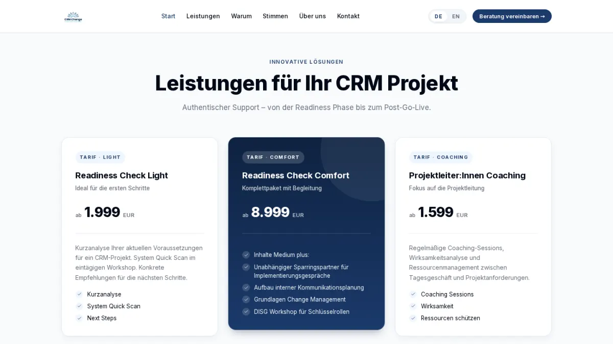
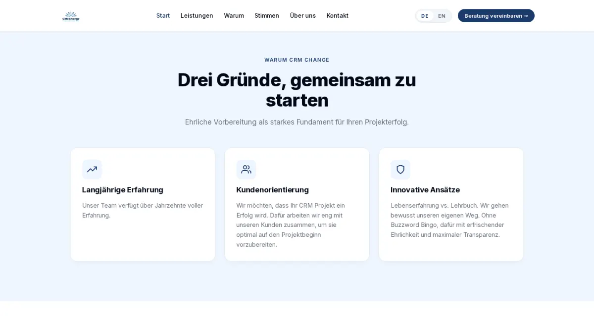
CRM project readiness consulting for DACH companies: honest, transparent and independent.
Visit website ↗Join hundreds of satisfied European clients leveraging our Specialized Salesforce Solutions.
Contact